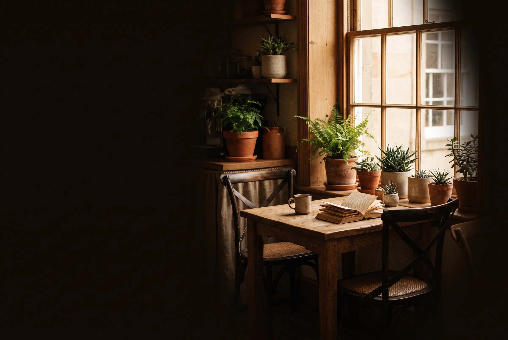
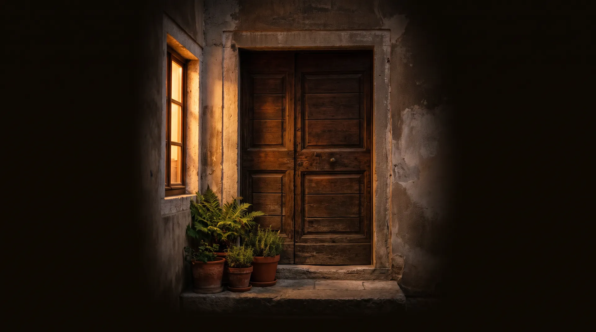

Кофе, ради которого стоит выйти из дома пораньше
Ул. Панфилова, Алматы · открыто с 8:00 · как добраться
Обжариваем зерно сами, раз в неделю. Тарт с яблоком печём здесь же, к открытию.
Столик у окна свободен. Горы сегодня видно.
Как добратьсяОткуда зерно
Покупаем зелёное зерно у импортёра specialty-кофе и обжариваем у себя небольшими партиями. На полке нет пачки старше трёх недель.
Эфиопия, Иргачеффе
Мытая обработка, высота 1 900–2 100 м. В чашке бергамот, абрикос и чай. Идёт в фильтр и в эспрессо для тех, кто любит посветлее.
Колумбия, Уила
Мытая обработка, высота 1 600–1 800 м. Молочный шоколад, карамель, мягкая кислотность. Основа нашего капучино и флэт уайта.
Обжарка по вторникам
Жарим во вторник, даём зерну отдохнуть 5–7 дней и только потом ставим в кофемолку. Зерно можно купить с собой в пачках по 250 г.
Маленькая стойка, одна кофемашина, никакой спешки
Каждую чашку собирает бариста, который знает, когда это зерно обжарено. Эспрессо проливаем 28–30 секунд, молоко взбиваем под каждую чашку, а не на весь заказ сразу.
Утром здесь берут флэт уайт с собой по дороге на работу. Днём сидят с ноутбуком у окна. Вечером заходят за фильтром и последним куском тарта.

Двенадцать мест и большое окно
Дубовые столы, глиняные чашки от местного керамиста, живые растения на подоконнике. Розетки у каждого стола, пароль от Wi-Fi на чеке.
Музыку держим тихой, чтобы можно было поговорить. В ясное утро из окна видно Заилийский Алатау.

Как нас найти
Ул. Панфилова, Алматы
Центр, пешком от Арбата. Вход со двора: ищите деревянную дверь и тёплый свет в окне.
- Пн–Пт
- 8:00–22:00
- Сб–Вс
- 9:00–23:00
- Завтраки
- до 12:00 каждый день
Хотите такой же сайт для своей кофейни?
Чашка кофе готовится при прокрутке, меню, адрес с картой и заявки сразу в WhatsApp. Сделаем под ваше заведение, меню, цены и фирменный стиль.
Написать в WhatsApp